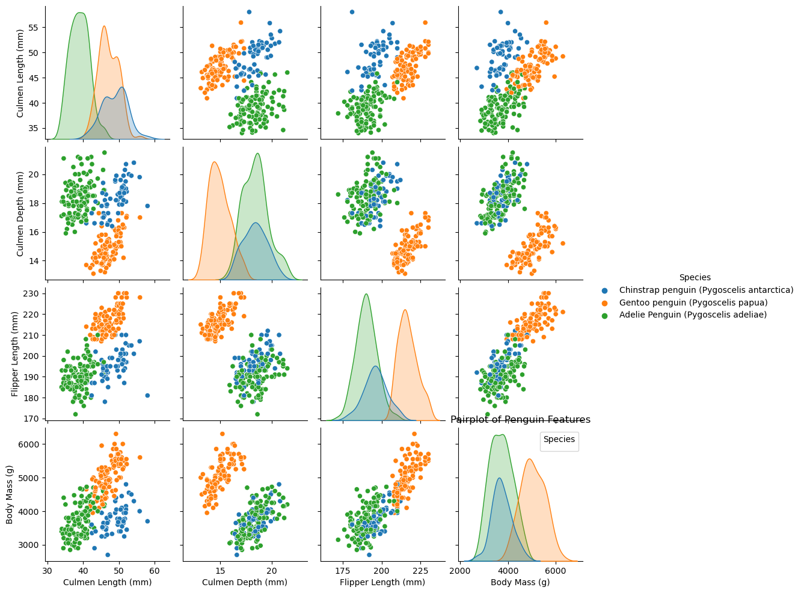
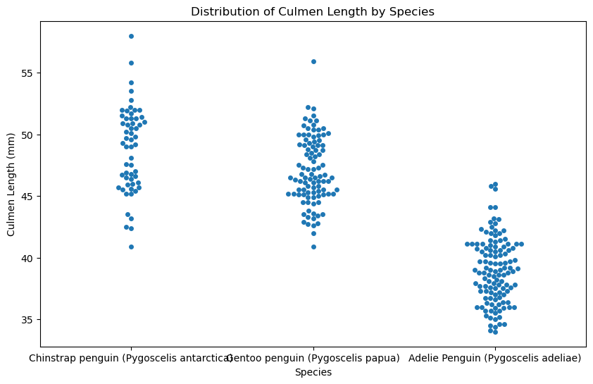

import pandas as pd
train_url = "https://raw.githubusercontent.com/PhilChodrow/ml-notes/main/data/palmer-penguins/train.csv"
train = pd.read_csv(train_url)
train.head()| studyName | Sample Number | Species | Region | Island | Stage | Individual ID | Clutch Completion | Date Egg | Culmen Length (mm) | Culmen Depth (mm) | Flipper Length (mm) | Body Mass (g) | Sex | Delta 15 N (o/oo) | Delta 13 C (o/oo) | Comments | |
|---|---|---|---|---|---|---|---|---|---|---|---|---|---|---|---|---|---|
| 0 | PAL0809 | 31 | Chinstrap penguin (Pygoscelis antarctica) | Anvers | Dream | Adult, 1 Egg Stage | N63A1 | Yes | 11/24/08 | 40.9 | 16.6 | 187.0 | 3200.0 | FEMALE | 9.08458 | -24.54903 | NaN |
| 1 | PAL0809 | 41 | Chinstrap penguin (Pygoscelis antarctica) | Anvers | Dream | Adult, 1 Egg Stage | N74A1 | Yes | 11/24/08 | 49.0 | 19.5 | 210.0 | 3950.0 | MALE | 9.53262 | -24.66867 | NaN |
| 2 | PAL0708 | 4 | Gentoo penguin (Pygoscelis papua) | Anvers | Biscoe | Adult, 1 Egg Stage | N32A2 | Yes | 11/27/07 | 50.0 | 15.2 | 218.0 | 5700.0 | MALE | 8.25540 | -25.40075 | NaN |
| 3 | PAL0708 | 15 | Gentoo penguin (Pygoscelis papua) | Anvers | Biscoe | Adult, 1 Egg Stage | N38A1 | Yes | 12/3/07 | 45.8 | 14.6 | 210.0 | 4200.0 | FEMALE | 7.79958 | -25.62618 | NaN |
| 4 | PAL0809 | 34 | Chinstrap penguin (Pygoscelis antarctica) | Anvers | Dream | Adult, 1 Egg Stage | N65A2 | Yes | 11/24/08 | 51.0 | 18.8 | 203.0 | 4100.0 | MALE | 9.23196 | -24.17282 | NaN |
Above we are importing data from the specififed URL and then reading in that data to the variable “train” We then can use the command “.head()”, to print ot the data table in a digestable and readable way.
#Data preparation copied from assignment
from sklearn.preprocessing import LabelEncoder
le = LabelEncoder()
le.fit(train["Species"])
def prepare_data(df):
df = df.drop(["studyName", "Sample Number", "Individual ID", "Date Egg", "Comments", "Region"], axis = 1)
df = df[df["Sex"] != "."]
df = df.dropna()
y = le.transform(df["Species"])
df = df.drop(["Species"], axis = 1)
df = pd.get_dummies(df)
return df, y
X_train, y_train = prepare_data(train)This code snippet is part of a data preparation process. First we have to import LabelEncoder class from the sklearn.preprocessing module, to help use encode labels into numerical values. We then call LabelEncoderand fit it to the species columb of the tranining data. This turned our categorial labels into number digestable to the machine learning algorithm. Next, a function named prepare_data is defined to handle the preprocessing tasks. Within this function, we remove irrelevant columns such as “studyName,” “Sample Number,” and others specified in the drop() method, we filter out rows with missing values in the “Sex” column, and if there are any missing values the rows are dropped as well.pd.get_dummies()switches the categorical columns into binary encoded columns and the now prepared data set is returned.
We then split the data into ‘x_train’ and ‘y_train’ and call the new prepare_data function described above on our data.
# important import statements to help visualize the data
import seaborn as sns
import matplotlib.pyplot as plt
import numpy as np# Setting up data evualtions
def evaluate_features(features, X, y):
clf = RandomForestClassifier()
scores = cross_val_score(clf, X[features], y, cv=5, scoring='accuracy')
return np.mean(scores)After importing our necessary platforms, we then set up the cross valadation score, establishing the classifier as a random object with no parameters. CV is the amount of time we cross-validate and then return our mean scores. The provided block of code defines a function named evaluate_features that assesses the predictive performance of a set of features using cross-validation with a random forest classifier. In the ’scores array, the accuracy scores are computed adn stores before returning the mean of these scores.
# Combination copied from assignemnt
from itertools import combinations
# these are not actually all the columns: you'll
# need to add any of the other ones you want to search for
all_qual_cols = ["Clutch Completion", "Sex"]
all_quant_cols = ['Culmen Length (mm)', 'Culmen Depth (mm)', 'Flipper Length (mm)']
for qual in all_qual_cols:
qual_cols = [col for col in X_train.columns if qual in col ]
for pair in combinations(all_quant_cols, 2):
cols = qual_cols + list(pair)
print(cols)
# you could train models and score them here, keeping the list of
# columns for the model that has the best score. ['Clutch Completion_No', 'Clutch Completion_Yes', 'Culmen Length (mm)', 'Culmen Depth (mm)']
['Clutch Completion_No', 'Clutch Completion_Yes', 'Culmen Length (mm)', 'Flipper Length (mm)']
['Clutch Completion_No', 'Clutch Completion_Yes', 'Culmen Depth (mm)', 'Flipper Length (mm)']
['Sex_FEMALE', 'Sex_MALE', 'Culmen Length (mm)', 'Culmen Depth (mm)']
['Sex_FEMALE', 'Sex_MALE', 'Culmen Length (mm)', 'Flipper Length (mm)']
['Sex_FEMALE', 'Sex_MALE', 'Culmen Depth (mm)', 'Flipper Length (mm)']In the code snippet above, we define our qualitative columns and our quantative columns, and then with a nested for loop over our data we combine our columns. Finally we print out the combinations so we can get a sense of visualizing our data.
# Combine quantitative features with the target variable for visualization
penguins_explore = train[['Species', 'Culmen Length (mm)', 'Culmen Depth (mm)', 'Flipper Length (mm)', 'Body Mass (g)']]
# Plot pairplot
sns.pairplot(penguins_explore, hue='Species')
plt.title('Pairplot of Penguin Features')
plt.xlabel('Feature Values') # X-axis label
plt.ylabel('Feature Values') # Y-axis label
plt.legend(title='Species') # Legend title
plt.show()/Users/lenoxherman/anaconda3/envs/ml-0451/lib/python3.9/site-packages/seaborn/_oldcore.py:1119: FutureWarning: use_inf_as_na option is deprecated and will be removed in a future version. Convert inf values to NaN before operating instead.
with pd.option_context('mode.use_inf_as_na', True):
/Users/lenoxherman/anaconda3/envs/ml-0451/lib/python3.9/site-packages/seaborn/_oldcore.py:1119: FutureWarning: use_inf_as_na option is deprecated and will be removed in a future version. Convert inf values to NaN before operating instead.
with pd.option_context('mode.use_inf_as_na', True):
/Users/lenoxherman/anaconda3/envs/ml-0451/lib/python3.9/site-packages/seaborn/_oldcore.py:1119: FutureWarning: use_inf_as_na option is deprecated and will be removed in a future version. Convert inf values to NaN before operating instead.
with pd.option_context('mode.use_inf_as_na', True):
/Users/lenoxherman/anaconda3/envs/ml-0451/lib/python3.9/site-packages/seaborn/_oldcore.py:1119: FutureWarning: use_inf_as_na option is deprecated and will be removed in a future version. Convert inf values to NaN before operating instead.
with pd.option_context('mode.use_inf_as_na', True):
No artists with labels found to put in legend. Note that artists whose label start with an underscore are ignored when legend() is called with no argument.
Seaborn’s pairplot feature shows us different features across different penguin species. It is a good tool to explore relationships between multiple variables and to visualize the data to make comparisons so we can see what characteristics contribute to distunguishing between species. In this case, the pairplot is applied to the penguins_explore dataframe, which includes the species of penguins and quantitative features such as culmen length, culmen depth, flipper length, and body mass.
Each scatterplot in the grid represents the relationship between two quantitative variables, with each point representing a penguin. The histograms along the diagonal show the distribution of each individual variable. The different colors in the graph represent the different species of penguin.
# Plot swarm plot
plt.figure(figsize=(10, 6))
sns.swarmplot(x='Species', y='Culmen Length (mm)', data=train)
plt.title('Distribution of Culmen Length by Species')
plt.xlabel('Species')
plt.ylabel('Culmen Length (mm)')
plt.show()/Users/lenoxherman/anaconda3/envs/ml-0451/lib/python3.9/site-packages/seaborn/_oldcore.py:1119: FutureWarning: use_inf_as_na option is deprecated and will be removed in a future version. Convert inf values to NaN before operating instead.
with pd.option_context('mode.use_inf_as_na', True):
/Users/lenoxherman/anaconda3/envs/ml-0451/lib/python3.9/site-packages/seaborn/_oldcore.py:1119: FutureWarning: use_inf_as_na option is deprecated and will be removed in a future version. Convert inf values to NaN before operating instead.
with pd.option_context('mode.use_inf_as_na', True):
Above is a swarmplot outlining the how individual data points are distributed across different categories. This plot shows the distribution of culmen length across different species. This graph can help visualize the density of data point and determine the frequency and provide context for data points like the mean or mode.
summary_table = train.groupby('Species').agg({'Culmen Length (mm)': 'mean',
'Culmen Depth (mm)': 'mean',
'Flipper Length (mm)': 'mean',
'Body Mass (g)': 'mean'}).reset_index()
summary_table| Species | Culmen Length (mm) | Culmen Depth (mm) | Flipper Length (mm) | Body Mass (g) | |
|---|---|---|---|---|---|
| 0 | Adelie Penguin (Pygoscelis adeliae) | 38.970588 | 18.409244 | 190.084034 | 3718.487395 |
| 1 | Chinstrap penguin (Pygoscelis antarctica) | 48.826316 | 18.366667 | 196.000000 | 3743.421053 |
| 2 | Gentoo penguin (Pygoscelis papua) | 47.073196 | 14.914433 | 216.752577 | 5039.948454 |
The summary table shows us mean of each category for each specie so we can easily compare quantitative data. This table can help us to compare specific features across different species of penguins.
#Multi-way classification, copied from assginment
from sklearn.linear_model import LogisticRegression
from sklearn.ensemble import RandomForestClassifier
from sklearn.model_selection import train_test_split
from sklearn.metrics import accuracy_score
from sklearn.svm import SVC
#Data preparation
X_train, y_train = prepare_data(train)
X_train, X_test, y_train, y_test = train_test_split(X_train, y_train, test_size=0.2, random_state=42)
# Feature selection
quantitative_features = ['Culmen Length (mm)', 'Culmen Depth (mm)', 'Flipper Length (mm)', 'Body Mass (g)']
qualitative_feature = ['Sex']
# Train and test models
classifiers = {
"Logistic Regression": LogisticRegression(),
"Random Forest": RandomForestClassifier(),
"Support Vector Machine": SVC()
}
# this counts as 3 features because the two Clutch Completion
# columns are transformations of a single original measurement.
# you should find a way to automatically select some better columnMu
# as suggested in the code block above
# cols = ["Flipper Length (mm)", "Body Mass (g)", "Clutch Completion_No", "Clutch Completion_Yes"]
Above, the code prepares the data and then preforming a train_test spilt. We then choose which columns we want to be our qualitative data versus quantitative data and defining our classifiers.
#Test- train split
from sklearn.model_selection import train_test_splitfrom sklearn.linear_model import LogisticRegression
from sklearn.svm import SVC # support vector classifier
from mlxtend.plotting import plot_decision_regions # for visualization later
predictor_cols = ["Culmen Length (mm)", "Culmen Depth (mm)"]
target_col = "Species"Above we chose our features that we are going to apply to the test data. For this model we want to correctly predict specie 100% of the time based on culmen length and depth.
LR = LogisticRegression()
LR.fit(X_train[predictor_cols], y_train)
LR.score(X_train[predictor_cols], y_train)
LR.coef_array([[-0.87699872, 1.93957404],
[ 0.2923175 , 0.3240132 ],
[ 0.58468122, -2.26358723]])In the code snippet above, we are now actually preforming the logicstic regression. We fit the logistic regression to our training data, highlighting which predicator column we want, then we calculate the scores.
# Column combinations
from itertools import combinations
# these are not actually all the columns: you'll
# need to add any of the other ones you want to search for
all_qual_cols = ["Clutch Completion", "Sex"]
all_quant_cols = ['Culmen Length (mm)', 'Culmen Depth (mm)', 'Flipper Length (mm)']
for qual in all_qual_cols:
qual_cols = [col for col in X_train.columns if qual in col ]
for pair in combinations(all_quant_cols, 2):
cols = qual_cols + list(pair)
print(cols)['Clutch Completion_No', 'Clutch Completion_Yes', 'Culmen Length (mm)', 'Culmen Depth (mm)']
['Clutch Completion_No', 'Clutch Completion_Yes', 'Culmen Length (mm)', 'Flipper Length (mm)']
['Clutch Completion_No', 'Clutch Completion_Yes', 'Culmen Depth (mm)', 'Flipper Length (mm)']
['Sex_FEMALE', 'Sex_MALE', 'Culmen Length (mm)', 'Culmen Depth (mm)']
['Sex_FEMALE', 'Sex_MALE', 'Culmen Length (mm)', 'Flipper Length (mm)']
['Sex_FEMALE', 'Sex_MALE', 'Culmen Depth (mm)', 'Flipper Length (mm)']Again, above demonstrates differnt combinations of features, even though we don’t apply these to our test data.
from statistics import mean
# LR.fit(X_test, y_test)
# LR.score(X_test, y_test)
preds = LR.predict(X_test[predictor_cols])
print(y_test == preds)[ True True True True True True True True True True True True
True True True True True True True True True True True True
True True True True True True True True True True True True
True True True True True True True True True True True True
True True True True]Above you can see that we were able to predict specie based on culmen length and depth with 100% accuracy!